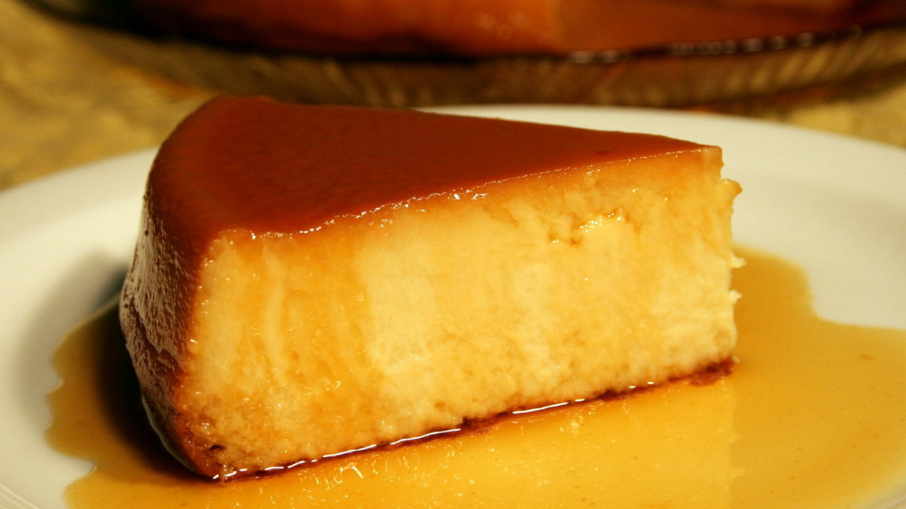

Budin de pan

Ingredientes
- 450 - 500 gr. de pan
- 1 lt. de leche
- 250 gr. de azúcar
- 1 limón rallado
- 4 huevos
- 1 cda. de escencia de vainilla
Para el caramelo
- 1 taza de azúcar
- 1/2 taza de agua
Paso a paso
-
Cortar el pan en trozos pequeños y colocarlo en un recipiente
amplio. Hidratar el pan con la leche tibia y dejar reposar 30
minutos
-
Preparar el caramelo: Colocar el azúcar en una olla y calentar a
fuego medio hasta que se derrita y tome color ámbar. Agregar el
agua caliente poco a poco, revolviendo con cuidado para evitar
salpicaduras. Cocinar hasta disolver completamente los cristales
y obtener un caramelo fluido. Verter el caramelo en el molde y
cubrir fondo y paredes. Dejar enfriar.
-
Pasada la media hora, licuar el pan hidratado hasta obtener una
mezcla homogénea. Dejar algunos trozos si se desea una textura
más rústica.
-
Incorporar el azúcar y los huevos. Licuar brevemente hasta
integrar completamente sin airear en exceso.
-
Añadir la ralladura de limón y la esencia de vainilla. Si la
mezcla estuviera demasiado espesa, agregar 50–100 ml de leche y
licuar nuevamente hasta obtener una consistencia fluida pero no
líquida.
-
Volcar la mezcla en el molde acaramelado y cubrir con papel
manteca, asegurando un cierre firme para conservar la humedad.
-
Cocinar a baño María: Colocar el molde dentro de una bandeja
profunda con agua caliente que cubra la mitad del molde. Cocinar
en horno a 160 °C durante aproximadamente 1 hora.
-
Verificar cocción insertando un cuchillo: debe salir apenas
húmedo, sin mezcla líquida.
-
Enfriar completamente. Dejar reposar al menos 4 horas (ideal:
toda la noche) y desmoldar. Ideal para acompañar con dulce de
leche o crema!
Volver